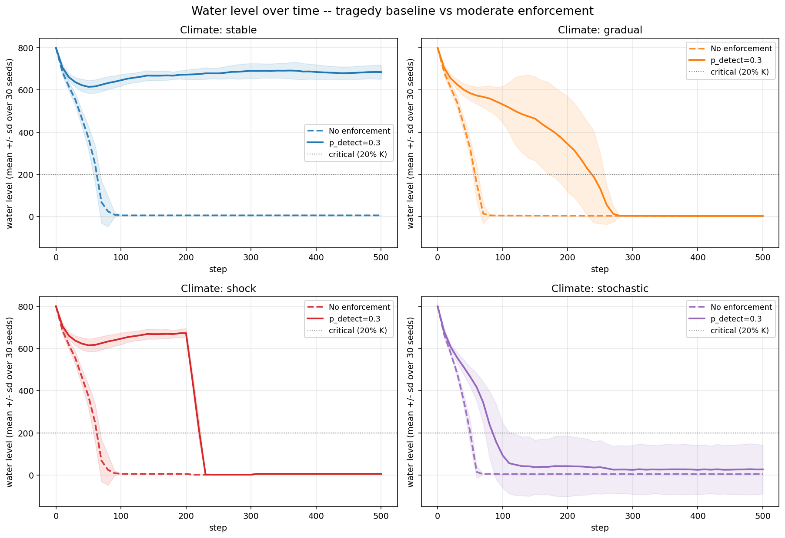
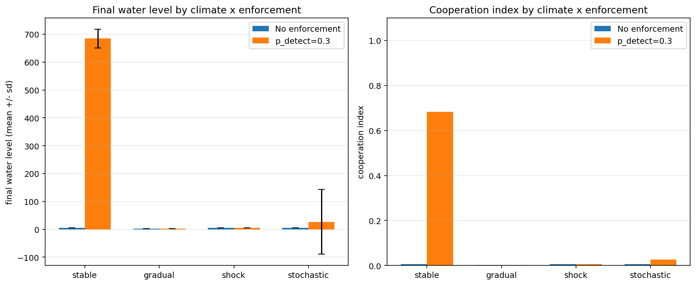
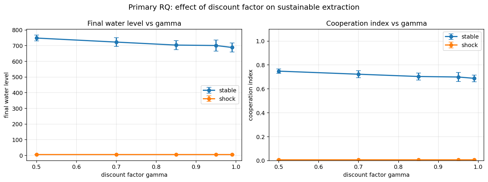
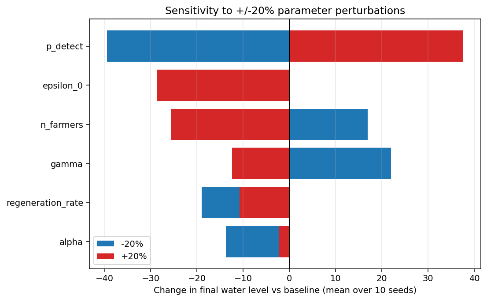
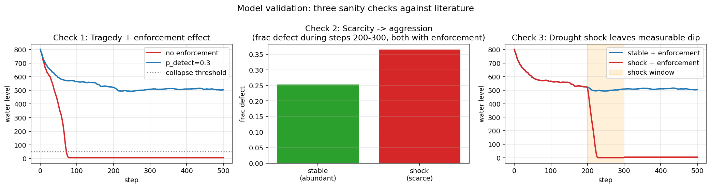
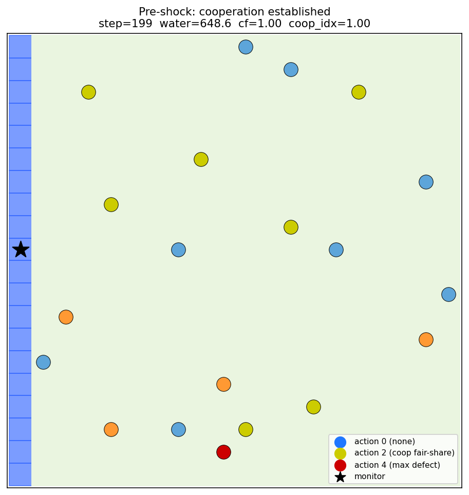
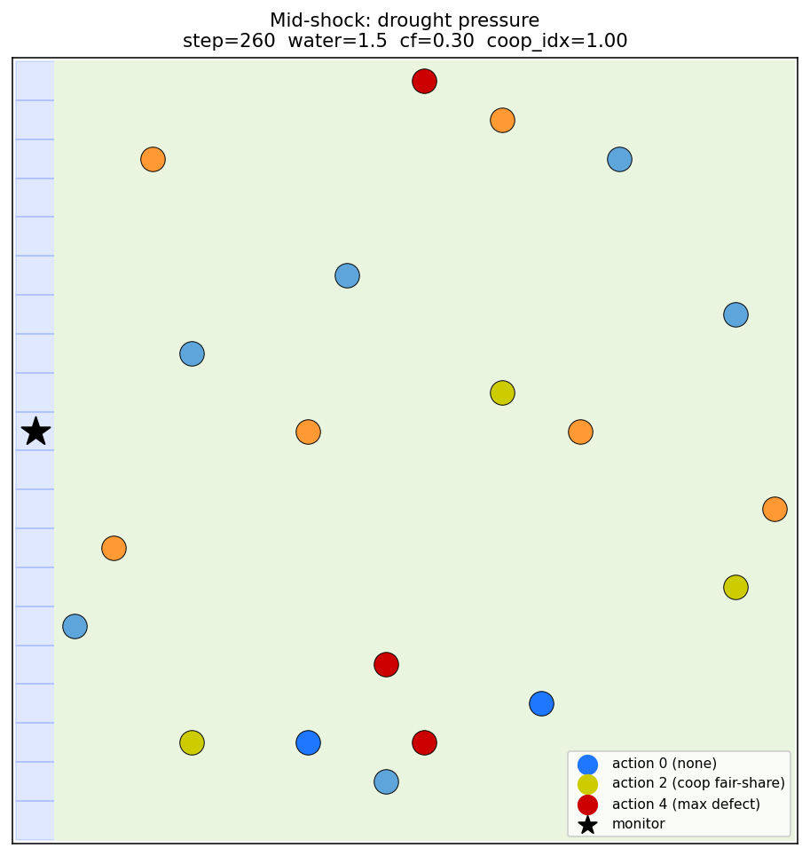
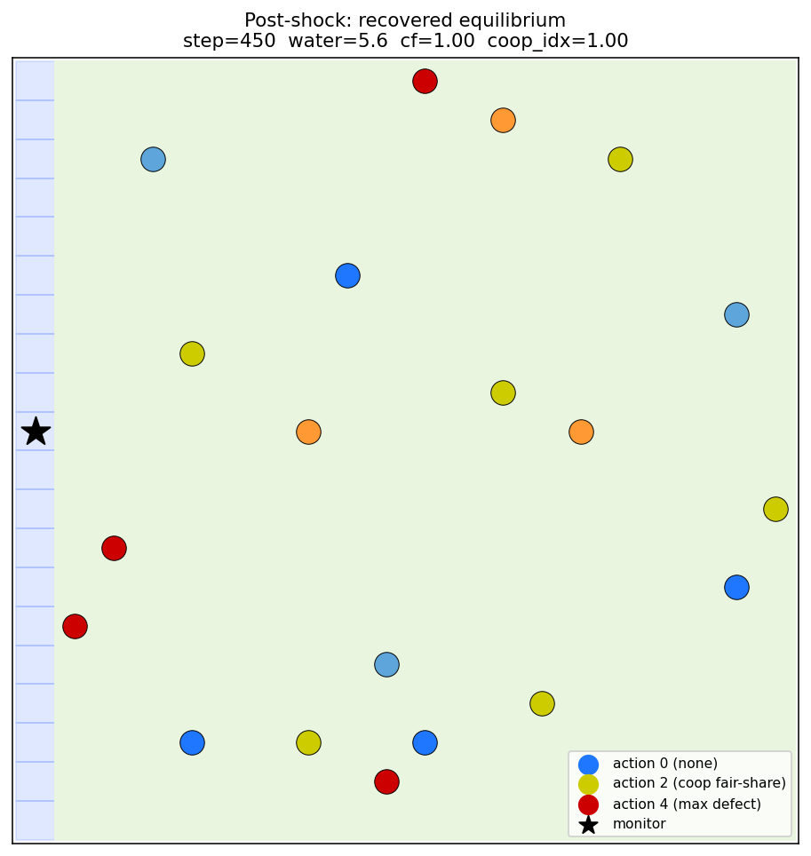

01
Tragedy is reproducible.
Without enforcement, pure Q-learners collapse the resource in every climate scenario within ~80 steps. Mean water falls to ~5 / 1000 units; payoffs go strongly negative.
Final water: 5.5 ± 0.0 (all scenarios)
Twenty farmers, one river, and a learning algorithm. We ask whether decentralized AI agents can avoid the Tragedy of the Commons — and what happens when climate shocks rewrite the rules.
Across the world, agricultural communities depend on shared rivers and aquifers. Each farmer faces the same dilemma: extracting more is privately rational but collectively suicidal. Hardin (1968) called this the Tragedy of the Commons. Climate change makes the dilemma sharper.
Existing agent-based models assume farmers follow fixed rules — cooperate, defect, or tit-for-tat. Real communities learn. We equipped each irrigator with an independent tabular Q-learning algorithm and tested whether cooperation emerges, and what happens when the climate breaks.
Without enforcement, pure Q-learners collapse the resource in every climate scenario within ~80 steps. Mean water falls to ~5 / 1000 units; payoffs go strongly negative.
Adding a monitor with detection probability p_detect = 0.3 flips the dynamics. Mean final water rises 125×, payoffs turn positive, 86% of agents pick cooperative actions.
The same intensity collapses every other scenario. Raising p_detect to 0.9 does not rescue drought-shock runs. Fixed-quota policy breaks structurally when climate changes.
Each chooses one of five extraction levels every season. Q-table maps observed state to expected reward.
Logistic regeneration plus baseline inflow, modulated by a climate factor cf(t).
Catches over-extractors with probability pdetect and issues fines proportional to excess extraction.
Q(s,a) ← Q(s,a) + α·[r + γ·max Q(s′,a′) − Q(s,a)]. Tabular, interpretable, transparent.








Three structured sanity checks run automatically in experiments/validate.py. All three pass.
Without enforcement the resource collapses (5.6); with enforcement under stable climate it sustains (504).
Defection fraction during the shock window: 25.3% under stable vs 36.5% under shock. Scarcity drives aggression.
A 70% drop in cf leaves a measurable dip: water at step 300 is 507 (stable) vs 1.5 (shock).
A semester project from the Department of Artificial Intelligence at NUTECH, supervised by Ms. Sumera Aslam.
Clone the repo, install the requirements, and run python run.py for the interactive Mesa visualization with live sliders and charts.